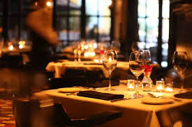
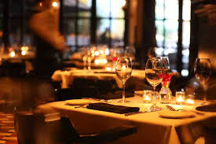
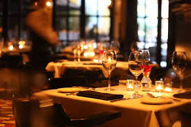

Welcome to Harvest Table
 
>experience the taste of perfection

Fardfish, a culinary masterpiece, is prepared with meticulous attention to detail, ensuring an exquisite dining experience. The fish is first marinated in a delicate blend of aromatic herbs and spices, allowing the flavors to permeate its tender flesh. Once marinated, it is seared to perfection, creating a golden crust that locks in the moisture and enhances its natural sweetness. To elevate the dish, it is elegantly plated atop a bed of saffron-infused risotto, which complements the fish’s rich flavors. Finally, a drizzle of citrus beurre blanc adds a luxurious touch, balancing the dish with a hint of acidity. Each bite offers a symphony of textures and flavors, making Fardfish an unforgettable highlight of our menu.
This elegant dish features perfectly cooked duck breast, seared to achieve a crispy skin and tender, juicy meat. It is accompanied by a rich cherry port reduction that adds a touch of sweetness and acidity, beautifully complementing the savory notes of the duck. The dish is elegantly plated with a side of creamy garlic mashed potatoes and seasonal roasted vegetables, creating a visually stunning presentation that delights the palate. This sophisticated entrée is sure to impress your guests and elevate any dining experience!
Indulge in the luxurious flavors of our Truffle Risotto with Wild Mushrooms. This creamy and aromatic dish is a true celebration of Italian cuisine. Arborio rice is slow-cooked to perfection, allowing it to absorb the rich flavors of vegetable broth and white wine. Each grain is infused with a delicate hint of black truffle oil, creating a luxurious depth of flavor. The risotto is generously mixed with a medley of sautéed wild mushrooms, including shiitake, porcini, and oyster, which add an earthy note and delightful texture. Finished with a sprinkle of freshly grated Parmigiano-Reggiano and a drizzle of truffle oil, this dish is garnished with microgreens for a touch of elegance. Every bite offers a creamy, velvety mouthfeel, complemented by the umami richness of the mushrooms and the intoxicating aroma of truffles, making it an unforgettable dining experience.